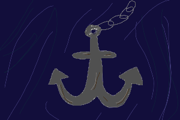

When would the next time be that you could efficiently breathe underwater, or see so clearly without goggles for that matter?
Even with that being said, there was some amount of questioning necessary in this decision. For as far as you could see, water and oxygen were the only things occupying the space with you. You couldn't even blame it on your surroundings being dark or murky- there just wasn't a lot going on at the current level. All the more reason to plunge deeper though, right? Not that you had the slightest clue what to anticipate besides sharks (potentially). If this was even the place for such.
You hoped that the whole immense-pressure thing wasn't a part of your dream's depiction of the ocean. As you kicked to go down, you were met with little resistance. If not for seeing your undressed feet, you would've thought you had flippers or a tail. Swimming in the deep end of a pool to get various rings from the bottom had never been this easy.
The further down you went, the easier it got. Gravity may as well have been pulling you down.
With that thought, you felt something wrap around your ankle. You felt your heart skip a beat in a moment of uncertainty. But you didn't have time to look up and see what had its hold on you before you were turned right-side up. The chain that bound you was attached to an anchor on the other end, ushering you straight down. Deeper, deeper...it was a good thing you still had no issue breathing. There was no reason to panic, you told yourself, though for yourself you felt heavier than was natural.
When you reached the bottom, you had no choice but to be relieved. You heard the clink of the anchor as it collided with a sunken ship. When your feet made contact with the wood, the anchor disappeared.
It had been a way to fast travel to here. Wherever here was. Your knowledge on boats was limited, and you couldn't think of anything that stood out that could possibly make your subconscious latch to it so strongly that it brought you here. It could be just another thing to explore. You didn't think it would take too long considering how small it looked. It couldn't have been a vessel for a large crew, for instance. Maybe a captain and a few select friends?
Curiosity in tow, you walked towards the stairs that led lower into the boat. Come to find out it was fancifully decorated. There were banners with patterns like you'd never seen, drifting slightly upwards as if hoping to find a way out and up: things that wanted to see the light of day.
There were books bound in wood and leather. Although you highly wished for something of them to be recoverable, each one you opened gave no hint to the secrets or wisdoms they previously held. It had taken you a few times to notice, but everytime you discarded a book, it disappeared completely.
Nothing else was there to take them. There was no big show of them disappearing- they were just no longer there. You backed away and towards one of the banners, an end wrapping around one of your arms. Its hold wasn't tight or even animate, but it made you tug away in panic anyway.
When you were "freed", that banner vanished as well. You reached out to check if it had just been rendered invisible- but the space was empty. Uninhabited. It wasn't what you had aimed to do, and yet your lettting things go seemed to be the cause of them being lost completely. Lost where? You didn't know if there even was a way to tell.
Drifting awake, you felt confused and unsteady. There was a beat in which you couldn't remember where you were before everything came flooding back.
Shake it off and close your eyes again. This was a weird sensation to wake up amidst in...you want to stay awake, now.